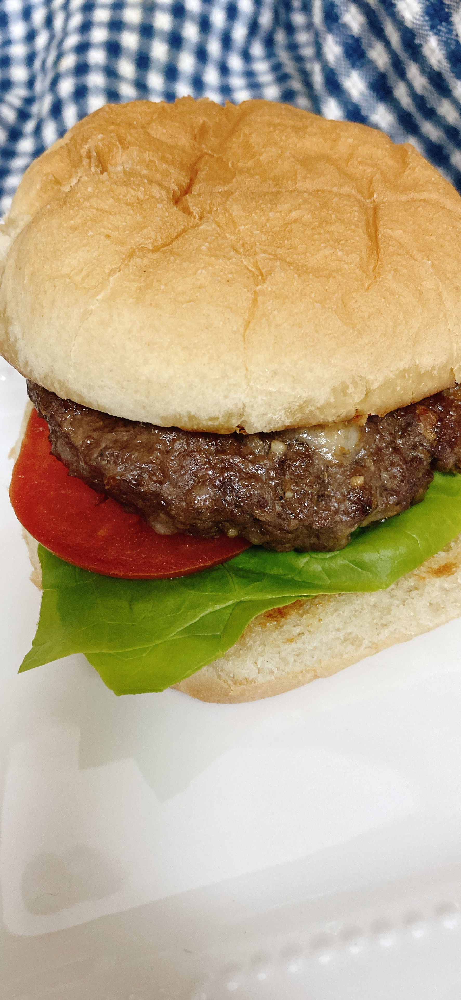

Home
Hamburger

Description
This is a small-scale hamburger recipe, perfect for two people.
Serve on toasted hamburger rolls with lettuce, tomato, ranch dressing, and other preferred toppings.
ingredients for 2 people
- ½ pound ground beef
- 1 ounce grated white Cheddar cheese
- 1 tablespoon French-fried onions
- 1 teaspoon dry ranch dressing mix
- ½ teaspoon sazon seasoning (such as Goya®)
- salt and ground black pepper to taste
Steps
- Preheat an air fryer to 370 degrees F (188 degrees C).
- Mix ground beef, Cheddar cheese, French-fried onions, ranch mix, sazon seasoning, salt, and pepper together in a medium bowl.
Shape into two equal hamburger patties.
- Air fry until internal thermometer is at least 160 degrees F (70 degrees C), about 6 minutes.
Nutrition facts
Per serving: 329 calories; protein 21.5g; carbohydrates 3.8g; fat 24.5g; cholesterol 82.7mg; sodium 313.9mg.